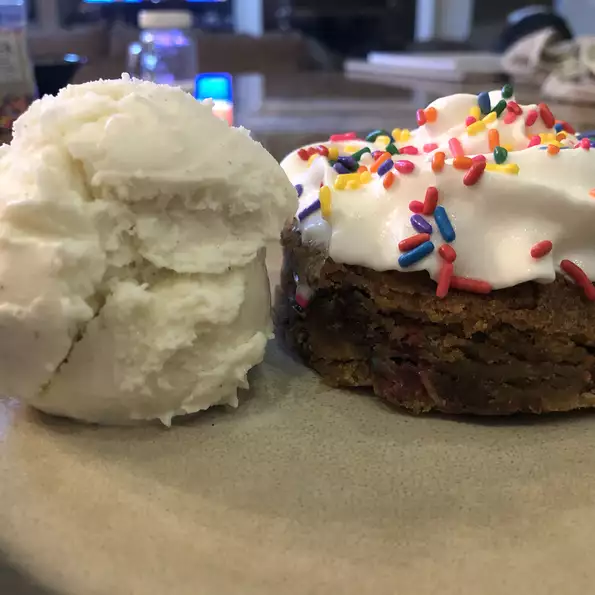

Cookie cake

Description
A cookie cake recipe
Ingredients
For cookie cake:
- 0.75 cup brown sugar
- 0.75 cup unsalted butter, at room temperature
- 0.25 cup white sugar
- 1 egg
- 2 teaspoons vanila extract
- 2 cups all-purpose flour
- 1 teaspoon baking soda
- 0.5 teaspoon salt
- 1 cup semi-sweet chocolate chips
For vanilla buttercream:
- 0.5 cup shortening
- 0.5 cup butter, softener
- 4 cups confectioners' sugar, divided
- 1 tablespoon water, or more as needed
- 1 teaspoon vanilla extract
Steps
- Beat brown sugar, unsalted butter, and white sugar together in a bowl using an
electric mixer until light and fluff, 3 to 4 minutes.
Mix in egg and 2 teaspoons vanilla extract until smooth.
With the mixer on low speed, add flour, baking soda, and salt and blend until batter is
jjust mixed. Fold chocolate chips into batter. Batter will be thick.
Chill in refrigerator at least 30 minutes to overnight.
- Preheat oven to 350 degrees F (175 degrees C). Line a 9-inch
cake pan with parchment paper.
- Spread batter into the prepared cake pan.
- Bake in th preheated oven until edges are golden
brown, about 20 minutes. Slightly cool cake in
the pan before transferring to a wire rack to
cool completely, about 30 minutes.
- Beat shortening and butter together in a bowl using
an electric mixer until smooth. Slowly beat in 3 cups
confectioners' sugar until smooth. Mix water and 1
teaspoon vanilla extract into confectioners' sugar
mixture; add remaining confectioners' sugar and mix
until buttercream is smooth. Add more water to thin,
if needed.
- Spread buttercream onto cookie cake.